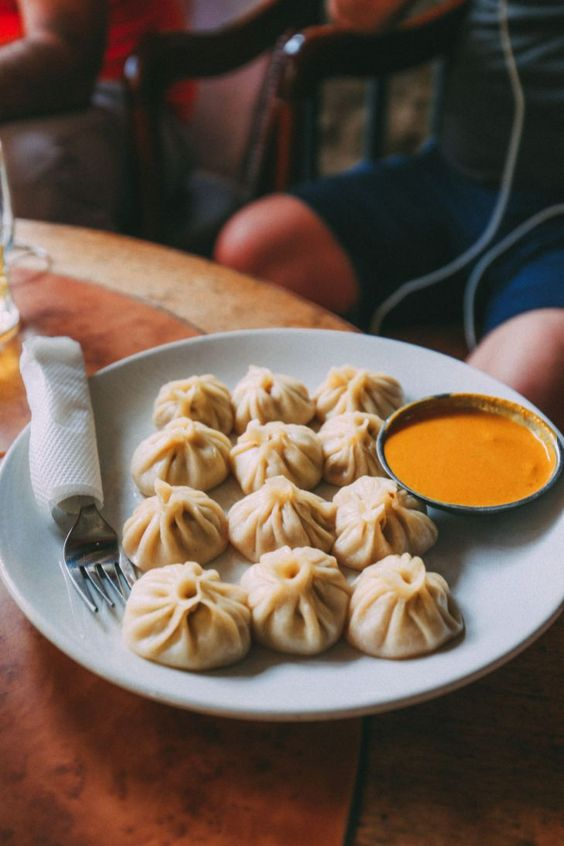

←Back
Burger

Momo are bite-size dumplings made with
a spoonful of stuffing wrapped in dough.
Momo are usually steamed, though they are
sometimes fried or steam-fried.
Ingredients
- Dough
- Oil
- Flour
- Onions
- Cabbage
- Chicken/Buff/Veges
Steps
- Break your dough into small piece and dip those pieces in flour.
- Take the little pieces of dough and roll it to make a circle having a radius of about 5-7cm.
- Mince the vegetables/meat and mix all the fillings as per your liking.
- Pack the fillings by covering it with the dough.
- Fill the bottom of steamer with water, oil the carier and place each Mo:Mo making a little gap.
- Steam it for about 20-25 minutes.
- Your Mo:Mo's are ready to be eaten!!!